We exist to create value, for ourselves and for our stakeholders – over the short, medium and long-term. The most visible value we create for ourselves can be seen in the profits we make, the growth and quality of our telecom asset base and our financial stability. In this section, we will briefly review our financial performance, which are supplemented by the audited Financial Statements and the notes thereon.
Group revenue increased by 4.6% year on year (YoY) to Rs. 68 billion in financial year 2015, supported by all segments of the Group, comprising Sri Lanka Telecom PLC (‘SLT’ or ‘Company’) and its eight subsidiaries. The holding company, SLT, crossed the Rs. 40 billion revenue milestone, reflecting an increase of 4.1% over the previous year. This was largely driven by over Rs. 20 billion investment in capacity building, introduction of new technologies and improving the automation of internal processes.
The subsidiary company, Mobitel (Pvt) Limited (‘Mobitel’) continued its growth momentum recording a 6.4% increase in revenue to Rs. 32.6 billion in 2015. This was mainly driven by broadband, followed by value added services and voice revenue, which continued to grow despite high subscriber penetration levels in the Sri Lankan mobile market. The notable increase in broadband revenue was consequent to the continuous investment in upgrades in technology in both 3G and 4G, as well as marketing initiatives undertaken to drive smart phone adoption and pricing innovations.
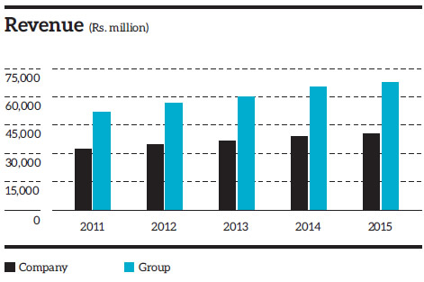Group operating costs were capped at Rs. 48 billion, reflecting a 3.8% YoY increase, a result of effective cost control measures adopted by the Group. SLT’s operating costs increased by a marginal 2.9% to Rs. 30.4 billion in 2015, in-line with investment in infrastructure expansion. Mobitel recorded a 6.6% increase in operating costs to Rs. 22.7 billion during the year.
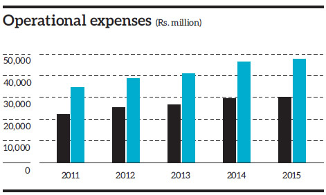The Group recorded a profit before tax (PBT) of Rs. 5.52 billion for the financial year 2015, reflecting a 33% YoY decline, compared to the Rs. 8.25 billion recorded in 2014. The significant drop in PBT is attributed to the US dollar appreciation against the Sri Lanka rupee, resulting in an exchange loss of Rs. 2.13 billion for the year 2015, compared to the marginal loss of Rs. 13 million recorded in 2014. The internally generated foreign currency inflows could not fully neutralise this negative impact on our foreign currency borrowings. In response we have fine tuned our risk management system, appointed a Group Treasury Committee and are reducing our dollar denominated borrowings. In addition, the zero level refunds on Telecommunication Development Charge (TDC) in 2015, compared to the Rs. 1.26 billion received in the previous year also adversely impacted the PBT of the Group. Consequently, the Group profit after tax (PAT) dipped 38% YoY to Rs. 3.72 billion compared to the Rs. 6.00 billion recorded in 2014.
At Company level, SLT’s PBT and PAT amounted to Rs. 2.80 billion and Rs. 1.73 billion respectively in 2015. The Company’s profits were impacted by foreign exchange losses of Rs. 0.92 billion and a zero level TDC refund compared to a minor foreign exchange gain and a Rs. 0.94 billion TDC refund of the previous year.
Mobitel recorded a PAT of Rs. 2.73 billion, reflecting a marginal decline of 4.6% against Rs. 2.86 billion in financial year 2014. The main contributory factor for this decline was the US dollar appreciation against the Sri Lanka rupee, resulting in an exchange loss of Rs. 1.2 billion for the year 2015. The additional taxes imposed by the Government during 2015, such as the mobile operator levy of Rs. 250 million and prepaid recharge tax given away in the form of a bonus to the customer, also impacted the profits during the year.
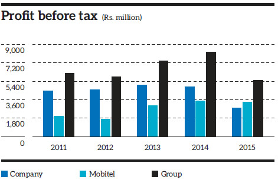 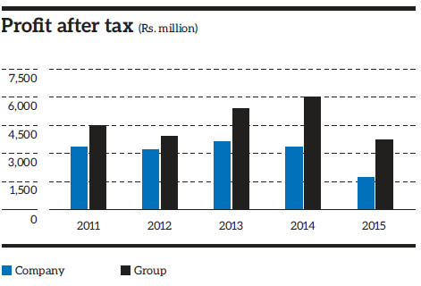 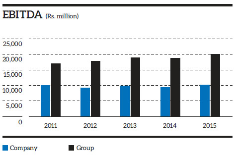 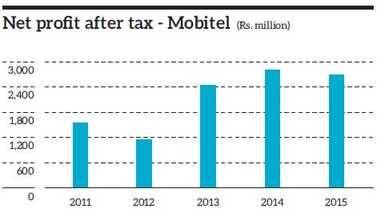 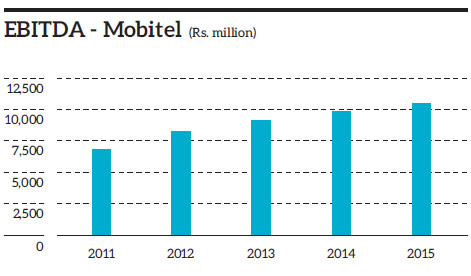Return on Equity (RoE), which is the profit attributable to shareholders as a percentage of shareholders’ equity decreased to 5.7% in 2015 at Group level, compared to 9.4% in 2014. At Company level RoE stood at 2.9% in 2015, compared to 5.7% in 2014.
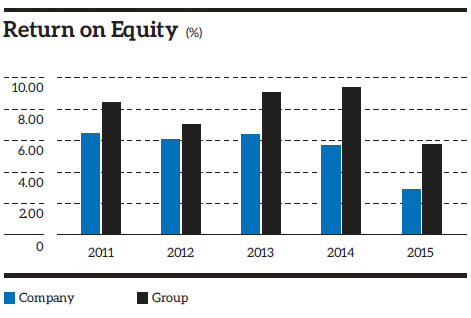Group interest cover decreased to 6.3 in 2015 from 9.7 in 2014. At Company level, it decreased to 4.5 from 10.2 in the previous year.
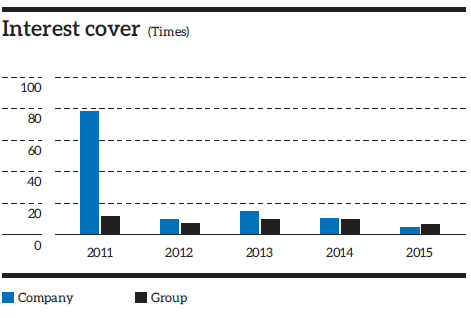The gearing ratio, which measures the proportion of a company’s borrowed funds to its equity, decreased to 0.27 as at 31 December 2015, compared to 0.30 as at the previous financial year end. At Company level, it was maintained at 0.22 in 2015 and 2014.
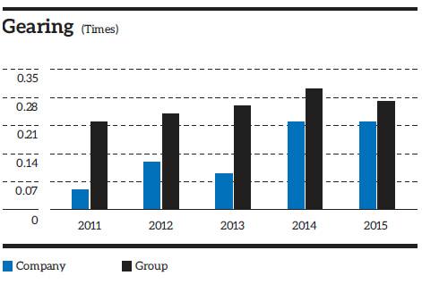Total non-current assets of the Group increased by 8.1% to Rs. 105.12 billion as at financial year end 2015, compared to Rs. 97.26 billion in the previous year. At Company level, SLT’s total non-current assets increased by 12.4% to Rs. 88.29 billion, compared to Rs. 78.53 billion in 2014.
Group property, plant & equipment increased by 9.2% to Rs.99.28 billion in 2015, compared to Rs. 90.93 billion in 2014, reflecting an increase of Rs. 8.35 billion. At Company level, property, plant & equipment increased by 16.4% to Rs. 70.08 billion, compared to Rs. 60.22 billion in 2014, reflecting an increase of Rs. 9.86 billion.
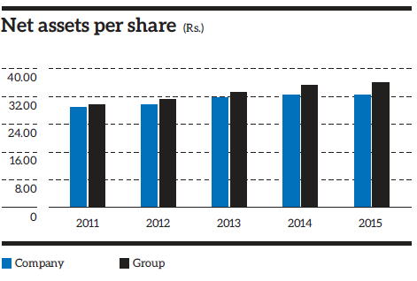 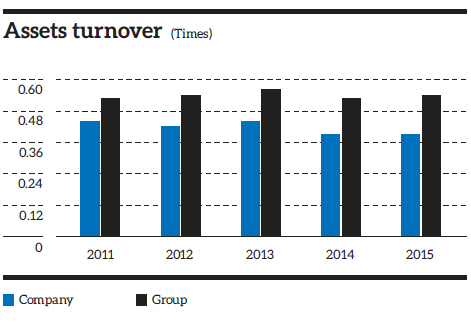The business of the SLT Group is dominated by fixed ICT operations (carried out by SLT) and mobile ICT operations (carried out by Mobitel).
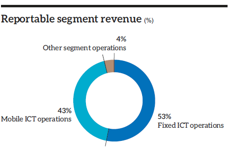 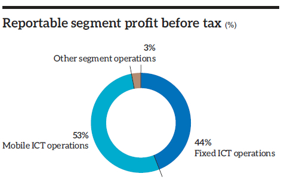 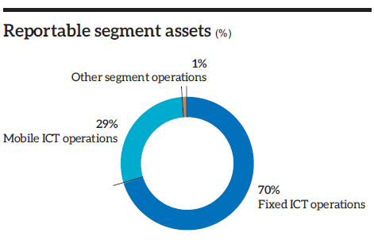 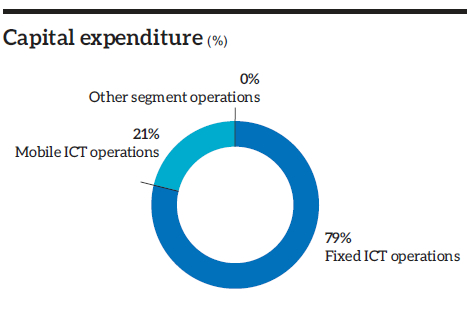From the above, we see that fixed ICT operations accounted for 53% of the revenue and 44% of PBT in 2015. A converse situation prevails in the case of mobile ICT operations, which accounted for 43% of revenue and 53% of PBT.
The asset base of fixed ICT operations, more than double, that of mobile ICT operations, as can also be seen by the much larger capital expenditure incurred in 2015.
Additional information on segmental performance is given in Note 5 to the Financial Statements.
| 2015 | % | 2014 | % | |
| Value added | ||||
| Revenue | 68,022 | 65,040 | ||
| Other income | 1,124 | 2,751 | ||
| 69,146 | 67,791 | |||
| Goods and services purchased from other sources | (28,579) | (27,997) | ||
| Value creation | 40,567 | 39,794 | ||
| Distribution of value added | ||||
| To employees | ||||
| – Salaries ,wages and other benefits | 15,577 | 38.40 | 14,150 | 35.56 |
| To providers of capital | ||||
| – Dividend to shareholders | 1,606 | 3.96 | 1,606 | 4.04 |
| To Government | ||||
| – Taxes and regulatory fees | 5,649 | 13.93 | 6,371 | 16.01 |
| To lenders | ||||
| – Interest and related charges | 2,398 | 5.91 | 211 | 0.53 |
| To business expansion and growth | ||||
| – Depreciation | 13,219 | 32.59 | 13,061 | 32.82 |
| – Retained income | 2,118 | 5.22 | 4,395 | 11.04 |
| 40,567 | 100.00 | 39,794 | 100.00 |